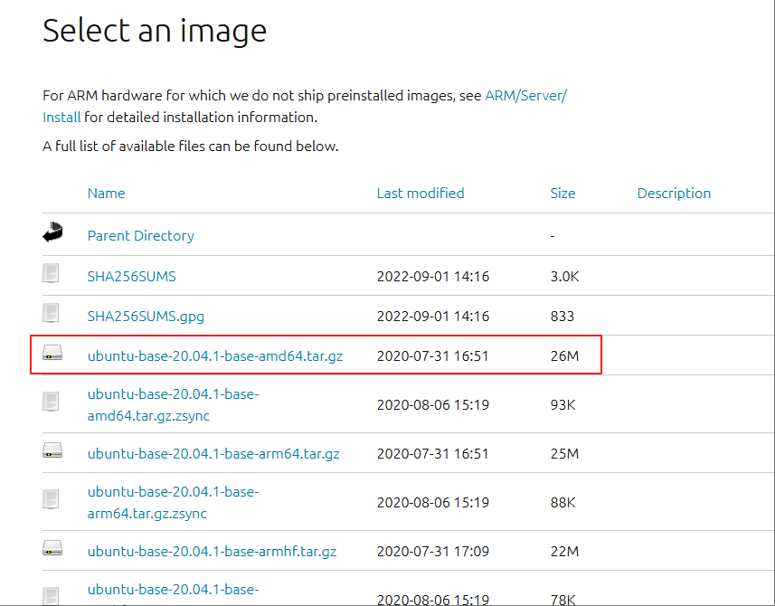

如何制作简单的Linux系统镜像#
介绍#
我们在启动Linux之前，需要制作一个系统镜像，这个镜像可以是Ubuntu这类带有用户界面，包数量众多的庞大镜像，也可以是非常小，仅有基本包和文件结构的最小化系统镜像。我们在Kernel Fuzzing的时候，一般不会选择太过庞大的镜像，因为那会儿带来不必要的资源开销。所以本文主要介绍的就是最小化系统镜像的构建。
create-image.sh 使用说明#
我们可以使用debootstrap这个工具自行构建镜像，但是那样做往往太慢了。更好的做法就是避免重复造轮子，使用已有的create-image.sh脚本。
概述#
create-image.sh脚本用于创建一个最小化的Debian Linux镜像，是syzkaller中的一部分。该脚本通过一系列步骤，包括使用debootstrap工具、配置系统设置以及添加必要的软件包，来构建一个可引导的Linux系统镜像。
环境要求#
操作系统：脚本应在支持
debootstrap和chroot的Linux系统上运行。依赖项：
debootstrap：用于创建新的Debian系统。qemu-user-static：如果目标架构与主机架构不同，则需要相应的静态二进制文件。sudo：用于执行需要超级用户权限的操作。其他工具：如
ssh-keygen、dd、mkfs.ext4等。
脚本获取&依赖安装#
mkdir $IMAGE ## 创建自定义目录
cd $IMAGE/
wget https://raw.githubusercontent.com/google/syzkaller/master/tools/create-image.sh -O create-image.sh
chmod +x create-image.sh
执行脚本之前，需要下载安装这个脚本所依赖的软件包：
sudo apt install debootstrap
使用方法#
基本用法#
./create-image.sh [选项...]
选项说明#
选项 |
长选项 |
描述 |
|---|---|---|
|
|
显示帮助信息并退出。 |
|
|
设置目标架构（默认为当前主机架构）。 |
|
|
设置要创建的Debian发行版（默认为 |
|
|
指定要安装的软件包功能集，可选值为 |
|
|
设置镜像大小（以MB为单位），默认为2048MB（2GB）。 |
|
|
启用此选项以添加perf支持。需要先设置环境变量 |
示例#
创建默认配置的镜像：
./create-image.sh
这将创建一个基于当前主机架构的
bullseye发行版的最小化Debian镜像，镜像大小为2GB。指定目标架构和发行版：
./create-image.sh -a arm64 -d buster
通过以上说明，您可以根据需求使用create-image.sh脚本创建适合的Debian Linux镜像。buster发行版的镜像。
启用perf支持：
KERNEL=/path/to/kernel/source ./create-image.sh -p
这将创建一个包含perf支持的镜像。需要先设置
$KERNEL环境变量为内核源码路径。
脚本参数#
ARCH：目标架构，默认为当前主机架构。RELEASE：Debian发行版，默认为bullseye。FEATURE：功能集选项，默认为minimal。SEEK：镜像大小（MB），默认为2048。PERF：是否启用perf支持，默认为false。
脚本流程#
解析命令行参数：脚本首先解析传入的命令行选项，并设置相应的变量。
架构处理：根据目标架构和主机架构，确定是否需要使用
qemu静态二进制文件。软件包安装：根据选择的功能集，安装必要的软件包。
系统配置：配置系统设置，包括网络接口、文件系统挂载点、SSH密钥等。
镜像创建：使用
dd和mkfs.ext4创建磁盘镜像，并将系统文件复制到镜像中。
注意事项#
如果目标架构与主机架构不同，需要确保已安装相应的
qemu-user-static包，并且相应的binfmt条目存在。当启用perf支持时，需要先设置
$KERNEL环境变量为内核源码路径。脚本运行需要超级用户权限，部分操作可能需要使用
sudo。
脚本内容#
如果你无法从互联网下载该脚本，可以尝试直接从下面复制：
#!env bash
# Copyright 2016 syzkaller project authors. All rights reserved.
# Use of this source code is governed by Apache 2 LICENSE that can be found in the LICENSE file.
# create-image.sh creates a minimal Debian Linux image suitable for syzkaller.
set -eux
# Create a minimal Debian distribution in a directory.
PREINSTALL_PKGS=openssh-server,curl,tar,gcc,libc6-dev,time,strace,sudo,less,psmisc,selinux-utils,policycoreutils,checkpolicy,selinux-policy-default,firmware-atheros,debian-ports-archive-keyring
# If ADD_PACKAGE is not defined as an external environment variable, use our default packages
if [ -z ${ADD_PACKAGE+x} ]; then
ADD_PACKAGE="make,sysbench,git,vim,tmux,usbutils,tcpdump"
fi
# Variables affected by options
ARCH=$(uname -m)
RELEASE=bullseye
FEATURE=minimal
SEEK=2047
PERF=false
# Display help function
display_help() {
echo "Usage: $0 [option...] " >&2
echo
echo " -a, --arch Set architecture"
echo " -d, --distribution Set on which debian distribution to create"
echo " -f, --feature Check what packages to install in the image, options are minimal, full"
echo " -s, --seek Image size (MB), default 2048 (2G)"
echo " -h, --help Display help message"
echo " -p, --add-perf Add perf support with this option enabled. Please set envrionment variable \$KERNEL at first"
echo
}
while true; do
if [ $# -eq 0 ];then
echo $#
break
fi
case "$1" in
-h | --help)
display_help
exit 0
;;
-a | --arch)
ARCH=$2
shift 2
;;
-d | --distribution)
RELEASE=$2
shift 2
;;
-f | --feature)
FEATURE=$2
shift 2
;;
-s | --seek)
SEEK=$(($2 - 1))
shift 2
;;
-p | --add-perf)
PERF=true
shift 1
;;
-*)
echo "Error: Unknown option: $1" >&2
exit 1
;;
*) # No more options
break
;;
esac
done
# Handle cases where qemu and Debian use different arch names
case "$ARCH" in
ppc64le)
DEBARCH=ppc64el
;;
aarch64)
DEBARCH=arm64
;;
arm)
DEBARCH=armel
;;
x86_64)
DEBARCH=amd64
;;
*)
DEBARCH=$ARCH
;;
esac
# Foreign architecture
FOREIGN=false
if [ $ARCH != $(uname -m) ]; then
# i386 on an x86_64 host is exempted, as we can run i386 binaries natively
if [ $ARCH != "i386" -o $(uname -m) != "x86_64" ]; then
FOREIGN=true
fi
fi
if [ $FOREIGN = "true" ]; then
# Check for according qemu static binary
if ! which qemu-$ARCH-static; then
echo "Please install qemu static binary for architecture $ARCH (package 'qemu-user-static' on Debian/Ubuntu/Fedora)"
exit 1
fi
# Check for according binfmt entry
if [ ! -r /proc/sys/fs/binfmt_misc/qemu-$ARCH ]; then
echo "binfmt entry /proc/sys/fs/binfmt_misc/qemu-$ARCH does not exist"
exit 1
fi
fi
# Double check KERNEL when PERF is enabled
if [ $PERF = "true" ] && [ -z ${KERNEL+x} ]; then
echo "Please set KERNEL environment variable when PERF is enabled"
exit 1
fi
# If full feature is chosen, install more packages
if [ $FEATURE = "full" ]; then
PREINSTALL_PKGS=$PREINSTALL_PKGS","$ADD_PACKAGE
fi
DIR=$RELEASE
sudo rm -rf $DIR
sudo mkdir -p $DIR
sudo chmod 0755 $DIR
# 1. debootstrap stage
DEBOOTSTRAP_PARAMS="--arch=$DEBARCH --include=$PREINSTALL_PKGS --components=main,contrib,non-free,non-free-firmware $RELEASE $DIR"
if [ $FOREIGN = "true" ]; then
DEBOOTSTRAP_PARAMS="--foreign $DEBOOTSTRAP_PARAMS"
fi
# riscv64 is hosted in the debian-ports repository
# debian-ports doesn't include non-free, so we exclude firmware-atheros
if [ $DEBARCH == "riscv64" ]; then
DEBOOTSTRAP_PARAMS="--keyring /usr/share/keyrings/debian-ports-archive-keyring.gpg --exclude firmware-atheros $DEBOOTSTRAP_PARAMS http://deb.debian.org/debian-ports"
fi
# debootstrap may fail for EoL Debian releases
RET=0
sudo --preserve-env=http_proxy,https_proxy,ftp_proxy,no_proxy debootstrap $DEBOOTSTRAP_PARAMS || RET=$?
if [ $RET != 0 ] && [ $DEBARCH != "riscv64" ]; then
# Try running debootstrap again using the Debian archive
DEBOOTSTRAP_PARAMS="--keyring /usr/share/keyrings/debian-archive-removed-keys.gpg $DEBOOTSTRAP_PARAMS https://archive.debian.org/debian-archive/debian/"
sudo --preserve-env=http_proxy,https_proxy,ftp_proxy,no_proxy debootstrap $DEBOOTSTRAP_PARAMS
fi
# 2. debootstrap stage: only necessary if target != host architecture
if [ $FOREIGN = "true" ]; then
sudo cp $(which qemu-$ARCH-static) $DIR/$(which qemu-$ARCH-static)
sudo chroot $DIR /bin/bash -c "/debootstrap/debootstrap --second-stage"
fi
# Set some defaults and enable promtless ssh to the machine for root.
sudo sed -i '/^root/ { s/:x:/::/ }' $DIR/etc/passwd
echo 'T0:23:respawn:/sbin/getty -L ttyS0 115200 vt100' | sudo tee -a $DIR/etc/inittab
printf '\nauto eth0\niface eth0 inet dhcp\n' | sudo tee -a $DIR/etc/network/interfaces
echo '/dev/root / ext4 defaults 0 0' | sudo tee -a $DIR/etc/fstab
echo 'debugfs /sys/kernel/debug debugfs defaults 0 0' | sudo tee -a $DIR/etc/fstab
echo 'securityfs /sys/kernel/security securityfs defaults 0 0' | sudo tee -a $DIR/etc/fstab
echo 'configfs /sys/kernel/config/ configfs defaults 0 0' | sudo tee -a $DIR/etc/fstab
echo 'binfmt_misc /proc/sys/fs/binfmt_misc binfmt_misc defaults 0 0' | sudo tee -a $DIR/etc/fstab
echo -en "127.0.0.1\tlocalhost\n" | sudo tee $DIR/etc/hosts
echo "nameserver 8.8.8.8" | sudo tee -a $DIR/etc/resolv.conf
echo "syzkaller" | sudo tee $DIR/etc/hostname
ssh-keygen -f $RELEASE.id_rsa -t rsa -N ''
sudo mkdir -p $DIR/root/.ssh/
cat $RELEASE.id_rsa.pub | sudo tee $DIR/root/.ssh/authorized_keys
# Add perf support
if [ $PERF = "true" ]; then
cp -r $KERNEL $DIR/tmp/
BASENAME=$(basename $KERNEL)
sudo chroot $DIR /bin/bash -c "apt-get update; apt-get install -y flex bison python-dev libelf-dev libunwind8-dev libaudit-dev libslang2-dev libperl-dev binutils-dev liblzma-dev libnuma-dev"
sudo chroot $DIR /bin/bash -c "cd /tmp/$BASENAME/tools/perf/; make"
sudo chroot $DIR /bin/bash -c "cp /tmp/$BASENAME/tools/perf/perf /usr/bin/"
rm -r $DIR/tmp/$BASENAME
fi
# Add udev rules for custom drivers.
# Create a /dev/vim2m symlink for the device managed by the vim2m driver
echo 'ATTR{name}=="vim2m", SYMLINK+="vim2m"' | sudo tee -a $DIR/etc/udev/rules.d/50-udev-default.rules
# Build a disk image
dd if=/dev/zero of=$RELEASE.img bs=1M seek=$SEEK count=1
sudo mkfs.ext4 -F $RELEASE.img
sudo mkdir -p /mnt/$DIR
sudo mount -o loop $RELEASE.img /mnt/$DIR
sudo cp -a $DIR/. /mnt/$DIR/.
sudo umount /mnt/$DIR
从Ubuntu官网下载镜像#
除了使用create-image.sh之外，比较熟悉Ubuntu的朋友们也可以从Ubuntu官网下载镜像
https://cdimage.ubuntu.com/cdimage/ubuntu-base/releases/20.04/release/

这里我们选择下载ubuntu-base-20.04.1-base-amd64.tar.gz，这是一个基础的文件系统目录结构和一些通用配置文件。
我们还需下载安装其他软件才能将系统运行起来。
创建一个镜像文件，因为我们还需要安装其他软件，所以选择创建了2G大小的镜像，这个根据实际需求来就好
dd if=/dev/zero of=rootfs.img bs=2048 count=1M
接着对镜像进行格式化
mkfs.ext4 -F -L linuxroot rootfs.img
然后将该镜像挂在到目录上
mkdir /mnt/tmpdir
mount -o loop rootfs.img /mnt/tmpdir/
将下载下来的压缩包解压到镜像文件中
tar zxvf ubuntu-base-20.04-base-amd64.tar.gz -C /mnt/tmpdir/
挂载好后，我们需要往它上面安装软件，为了能够使用上apt命令去安装软件，因此需要在chroot切换根环境前，把所需的DNS配置及各种内存文件系统挂载上去。
cp /etc/resolv.conf /mnt/tmpdir/etc/
mount -t proc /proc /mnt/tmpdir/proc
mount -t sysfs /sys /mnt/tmpdir/sys
mount -o bind /dev /mnt/tmpdir/dev
mount -o bind /dev/pts /mnt/tmpdir/dev/pts
挂载好了之后，就可以切换根文件系统了
chroot /mnt/tmpdir
进入了rootfs文件系统中后，可以使用apt安装程序
apt update
apt install -y language-pack-en-base \
sudo \
ssh \
net-tools \
ethtool \
wireless-tools \
ifupdown \
network-manager \
iputils-ping \
rsyslog \
htop \
vim \
kmod
安装完之后，记得给root用户配置密码
passwd root
然后修改hostname，否则可能无法上网
echo "guest_os" > /etc/hostname
修改/etc/hosts配置路由信息
127.0.0.1 localhost
127.0.0.1 guest_os
新版的Ubuntu发行版中会使用到netplan来管理网络，以24.04为例，如果想要Guest OS可以上网，那么需要做到以下几步：
启动qemu虚拟机的时候，命令行参数中需要有以下参数。我不是很懂这个的配置，所以就照猫画虎的抄了一下，如果你明白这个配置的细节，那么你可以修改配置。总之就是要添加一个网卡。
-netdev user,id=net0,hostfwd=tcp:127.0.0.1:10021-:22 -device virtio-net-pci,netdev=net0 # 或者下面这个也行 -net user,host=10.0.2.10,hostfwd=tcp:127.0.0.1:10021-:22 -net nic,model=e1000
配置
netplan。具体来说，需要在/etc/netplan/01-netcfg.yaml下面添加配置（如果没有这个文件就新建一个）。这里我的网卡叫做eth0，如果不知道自己的网卡叫什么名字，可以用ip a展示一下。填写好该配置之后，执行一下netplan apply即可应用配置network: version: 2 ethernets: eth0: dhcp4: true dhcp6: false nameservers: addresses: - 8.8.8.8 - 1.1.1.1
到此为止，我们就已经成功配置了Guest OS的网络。
配置已经结束了，接下来就可以卸载系统了
umount /mnt/tmpdir/proc/
umount /mnt/tmpdir/sys/
umount /mnt/tmpdir/dev/pts/
umount /mnt/tmpdir/dev/
umount /mnt/tmpdir/
如何将raw格式的镜像转为qcow2格式#
通过create-image.sh脚本，我们可以得到一个raw格式的镜像，但是qcow2格式的镜像有更好的灵活性和可伸缩性，所以我们可以通过以下方式将raw格式的镜像转为qcow2格式的镜像。
raw与qcow2的区别#
在虚拟化环境中，镜像文件用于存储虚拟机的操作系统和数据。raw格式和qcow2格式是两种常见的镜像文件格式，它们在功能、性能和使用场景上有明显的区别：
1. 文件格式和结构#
raw格式：
结构简单：
raw格式是一种非常基础的镜像格式，它直接将磁盘数据以二进制形式存储，没有任何额外的元数据或格式化信息。优点：由于没有额外的格式开销，
raw格式的镜像文件在读写操作上通常具有更高的性能，尤其是在顺序读写时。缺点：文件大小固定，无法动态扩展，且不支持高级特性（如快照、压缩等）。
qcow2格式：
结构复杂：
qcow2（QEMU Copy-On-Write v2）是一种高级的镜像格式，支持多种高级特性，如快照、压缩、稀疏存储等。优点：文件大小可以动态扩展，支持快照功能（可以创建多个时间点的镜像状态），并且可以通过压缩技术减小文件体积。
缺点：由于需要处理额外的元数据和特性，
qcow2格式的镜像在读写性能上通常不如raw格式。
2. 性能表现#
raw格式：
读写性能高：由于没有额外的格式开销，
raw格式在顺序读写操作中通常具有更高的性能，适合对性能要求较高的场景。随机读写性能也较好：在随机读写场景中，
raw格式的性能也较为稳定。
qcow2格式：
读写性能较低：由于需要处理元数据和可能的压缩/解压缩操作，
qcow2格式在读写性能上通常不如raw格式。适合小文件读写：在处理大量小文件的随机读写时，
qcow2格式的性能可能更接近raw格式。
3. 文件大小和存储效率#
raw格式：
固定大小：
raw格式的镜像文件大小与虚拟磁盘的实际大小一致，即使磁盘中大部分空间未被使用，文件大小也不会减小。存储效率低：如果虚拟磁盘中有大量未使用的空间，
raw格式会浪费存储资源。
qcow2格式：
动态大小：
qcow2格式支持稀疏存储，文件大小会根据实际使用的空间动态增长，未使用的空间不会占用存储资源。支持压缩：
qcow2格式可以通过压缩技术进一步减小文件体积，提高存储效率。
4. 功能特性#
raw格式：
功能简单：
raw格式不支持快照、压缩、动态扩展等高级特性。
qcow2格式：
支持快照：可以创建多个时间点的镜像状态，方便回滚和版本管理。
支持动态扩展：镜像文件大小可以根据实际使用动态增长，无需提前分配固定大小。
支持压缩：可以通过压缩技术减小文件体积，节省存储空间。
支持加密：
qcow2格式支持对镜像文件进行加密，提高数据安全性。
5. 适用场景#
raw格式：
高性能需求：适合对性能要求较高的场景，例如数据库服务器、高性能计算等。
简单场景：适用于不需要快照、动态扩展等高级特性的场景。
qcow2格式：
开发和测试：支持快照功能，方便在开发和测试环境中快速回滚到不同状态。
存储资源有限：动态扩展和压缩特性可以有效节省存储空间，适合存储资源有限的环境。
需要高级特性：如果需要使用加密、快照等功能，
qcow2格式是更好的选择。
总结#
raw格式：简单、高性能，但功能有限，适合对性能要求高且不需要高级特性的场景。
qcow2格式：功能丰富，支持快照、动态扩展、压缩等特性，但性能稍低，适合需要高级功能或存储资源有限的场景。
无需扩容#
如果无需扩容，则可以直接使用qemu-img convert命令进行转换。例如我现在有一个名为buster.img的镜像，我需要转为qcow2格式，可以使用以下命令：
$ qemu-img info ./buster.img
image: ./buster.img
file format: raw
virtual size: 2 GiB (2147483648 bytes)
disk size: 496 MiB
Child node '/file':
filename: ./buster.img
protocol type: file
file length: 2 GiB (2147483648 bytes)
disk size: 496 MiB
$ qemu-img convert -f raw -O qcow2 -c buster.img buster.qcow2
$ qemu-img info ./buster.qcow2
image: ./buster.qcow2
file format: qcow2
virtual size: 102 GiB (109521666048 bytes)
disk size: 395 MiB
cluster_size: 65536
Format specific information:
compat: 1.1
compression type: zlib
lazy refcounts: false
refcount bits: 16
corrupt: false
extended l2: false
Child node '/file':
filename: ./buster.qcow2
protocol type: file
file length: 400 MiB (419102720 bytes)
disk size: 395 MiB
这样我们就将raw格式的镜像转成了qcow2格式
需要扩容#
如果需要扩容，可以这样来做
步骤1：新建qcow2镜像#
我们可以通过以下命令创建qcow2镜像，该镜像是空的。
$ qemu-img create -f qcow2 buster_512.qcow2 512G
$ qemu-img info ./buster_512.qcow2
image: ./buster_512.qcow2
file format: qcow2
virtual size: 512 GiB (549755813888 bytes)
disk size: 16.5 KiB
cluster_size: 65536
Format specific information:
compat: 1.1
compression type: zlib
lazy refcounts: false
refcount bits: 16
corrupt: false
extended l2: false
Child node '/file':
filename: ./buster_512.qcow2
protocol type: file
file length: 200 KiB (204800 bytes)
disk size: 16.5 KiB
步骤2: 挂载镜像#
首先要执行以下命令下载该工具：
sudo apt install qemu-utils nbd-client
然后加载nbd模块
sudo modprobe nbd
将qcow2镜像连接到nbd设备
sudo qemu-nbd -c /dev/nbd0 your_image.qcow2
格式化nbd设备（其实也就是格式化qcow2镜像文件）
sudo mkfs.ext4 /dev/nbd0
将nbd设备挂在到目录
sudo mount /dev/nbd0 ./chroot-qcow2
将raw镜像挂在在另一个目录
sudo mount -o loop buster.img ./chroot
步骤3: 拷贝信息#
将raw镜像中的文件全部拷贝到qcow2镜像中
sudo cp -a ./chroot/. ./chroot-qcow2/
步骤4: 卸载挂载点#
最后再卸载挂载点
# 卸载挂载点
sudo umount -R ./chroot
sudo umount -R ./chroot-qcow2
# 关闭nbd设备
sudo qemu-nbd -d /dev/nbd0
这样就是得到了目标的镜像buster_512.qcow2
启动QEMU之后，可以在虚拟机中看到，我们的镜像确实被扩容成了512G：
root@syzkaller:~# lsblk
NAME MAJ:MIN RM SIZE RO TYPE MOUNTPOINT
sda 8:0 0 512G 0 disk /
sr0 11:0 1 1024M 0 rom
mtdblock0 31:0 0 128K 0 disk
nullb0 250:0 0 250G 0 disk
root@syzkaller:~# df -h
Filesystem Size Used Avail Use% Mounted on
/dev/root 503G 785M 477G 1% /
devtmpfs 692M 0 692M 0% /dev
tmpfs 705M 0 705M 0% /dev/shm
tmpfs 705M 11M 695M 2% /run
tmpfs 5.0M 0 5.0M 0% /run/lock
tmpfs 705M 0 705M 0% /sys/fs/cgroup